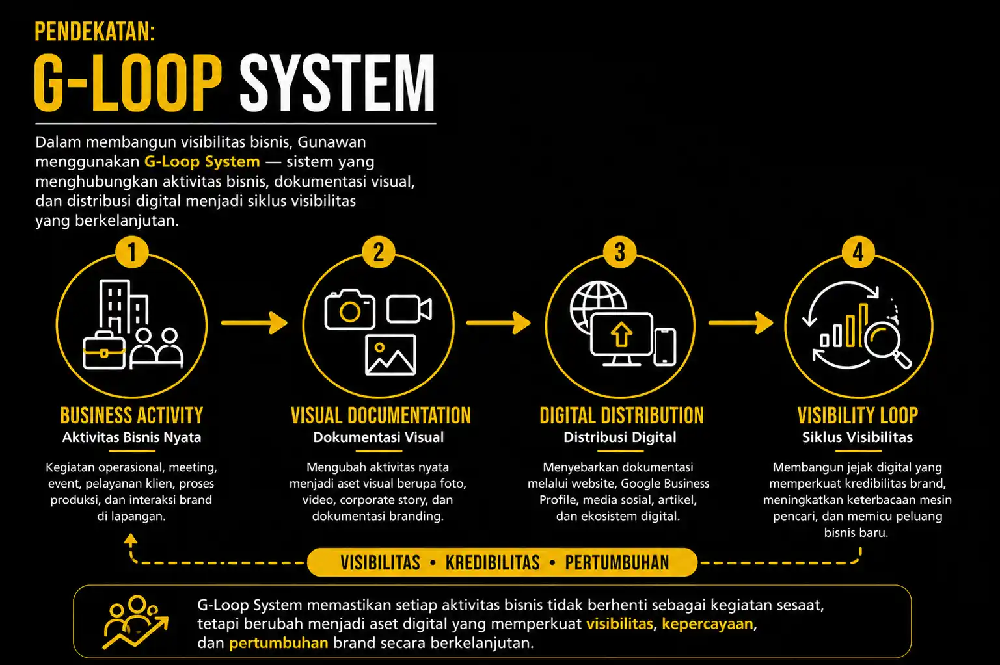

Gunawan Satyakusuma
Jasa Foto Video Bandung · Dokumentasi Event · Visibilitas Digital · G-Loop Method
Membantu bisnis berkembang melalui dokumentasi visual dan sistem visibilitas digital berbasis aktivitas nyata.
Jasa Foto Video Bandung · Dokumentasi Event · Visibilitas Digital · G-Loop Method
Membantu bisnis berkembang melalui dokumentasi visual dan sistem visibilitas digital berbasis aktivitas nyata.

Pelajari SistemGunawan Satyakusuma adalah praktisi dokumentasi visual di Bandung dan pengembang G-Loop Method sebagai sistem visibilitas digital berbasis praktik nyata.
Profil Lengkap